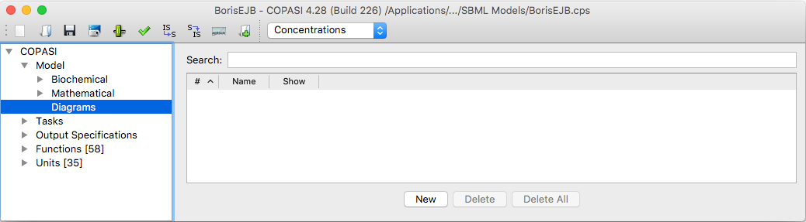
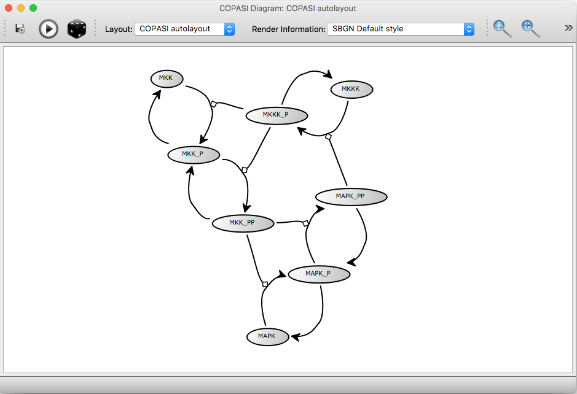
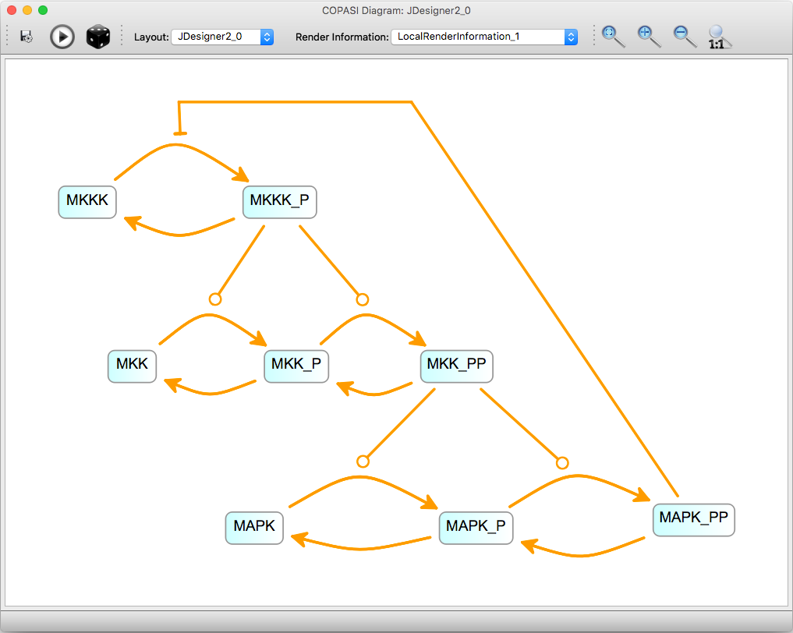
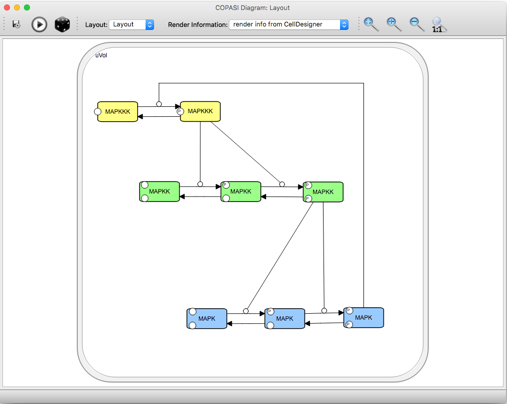
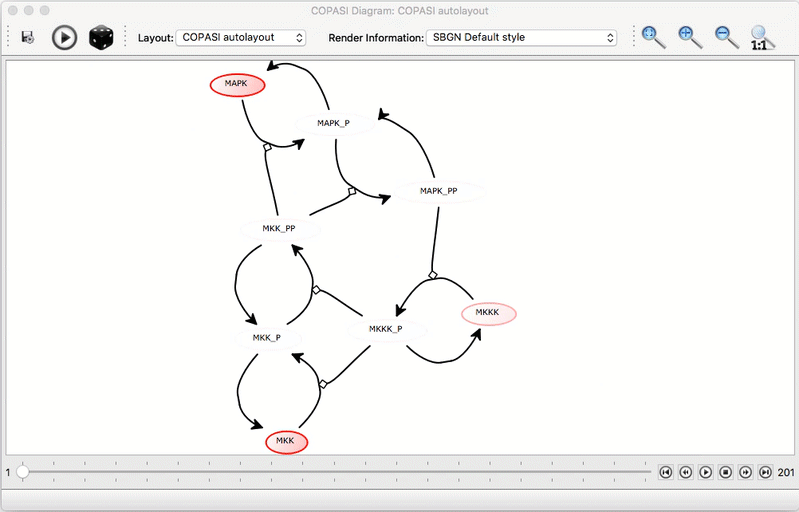
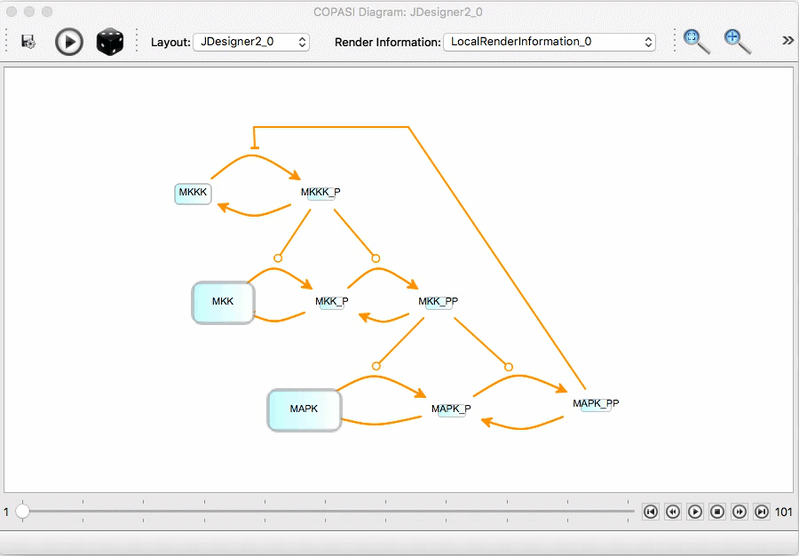

<div class="row">
  <div class="col-xs-12">
    <p>
      COPASI has the possibility to read and display layout information from COPASI and SBML
      files. An additional feature that comes with the diagram display is the possibility to display animations of time
      course data from simulations. The layout information can either be obtained in the form of the SBML layout
      extension (see the
      <a target="_blank" href="http://co.mbine.org/standards/sbml/level-3/version-1/layout" rel="external">SBML Layout
        Extension
        Specification</a> for further information) or from a COPASI file that includes layout information. </p>

    <h3>Generating Layout in COPASI</h3>
    <p>COPASI implements a force directed layout algorithm. To generate a new layout for the loaded model, you select
      Model-&gt;Diagrams
      from the tree, and click the <b>New</b> button in the list of layouts. </p>

    <p></p>

    <p>This will open a wizard, that allows you to choose which metabolites
      and reactions you want to create a layout for. By checking the checkbox <b>create compartment elements</b>, a
      compartment representation
      will also be created. The second page of the wizard is for specifying side-compounds. Selected metabolites will be
      duplicated in the layout
      for every reaction in which they occur, which can help to produce a cleaner layout. Upon confirmation, the auto
      layout algorithm proceeds,
      and you will be able to see the layout improving. Once the layout algorithm stops, you can move around elements
      whose position you want to
      improve. Hitting the <b>Play</b> button on the toolbar will start the layout algorithm from the current layout.
      Optionally you can also
      tweak the layout parameters, by choosing <b>Layout Parameters</b> from the <b>View</b> menu. Pressing the
      <b>Dice</b> button, randomizes
      the layout positions.</p>

    <p></p>

    <p>The save button allows to export the displayed image as PDF, SVG or PNG. The <b>Layout</b> combo box, allows to
      switch to another layout stored
      in the file. For each layout the <b>Render Information</b> combo box has a selection of different styles for
      rendering the layout.
    </p>

    <h3>Obtaining Layout from other sources</h3>

    <p>There are several ways to create layout information for an SBML model. </p>

    <p>
    <dl clas="row">

      <dt class="col-sm-2">CellDesigner</dt>
      <dd class="col-sm-10">
        <p>We implemented support for the graphical annotations used by <a href="http://celldesigner.org"
            target="_blank">CellDesigner</a>
          and so diagrams created with CellDesigner can be imported.</p>
      </dd>

      <dt class="col-sm-2">SABIO-RK</dt>
      <dd class="col-sm-10">
        <p><a target="_blank" href="http://sabio.bioquant.uni-heidelberg.de/" rel="external">SABIO-RK</a> is a reaction
          kinetics database that allows you to create SBML models from the entries in the database. The model can be
          saved as
          an SBML file and it can also create layout information for the model.</p>
      </dd>

      <dt class="col-sm-2">SBML Layout Viewer</dt>
      <dd class="col-sm-10">
        <p>Another web application that allows the user to add layout information to an SBML file is Frank Bergmanns <a
            target="_blank" href="http://sysbioapps.spdns.org/Layout" rel="external">SBML Layout Viewer</a>. It allows
          the
          user to influence the layout creation by setting some parameters.</p>
      </dd>

      <dt class="col-sm-2">SBW</dt>
      <dd class="col-sm-10">
        <p>Franks Bergmanns layout creation tool is also part of <a target="_blank" href="http://sbw.sourceforge.net/"
            rel="external">SBW</a> and since the latest Versions of COPASI do include SBW support, it is possible to
          send
          a model from COPASI to the layout tool and get back a model with layout information. Networks can also be
          visually created using
          JDesigner and then converted to SBML Layout.</p>
      </dd>

      <dt class="col-sm-2">Sycamore</dt>
      <dd class="col-sm-10">The <a target="_blank" href="http://sycamore.h-its.org/sycamore/" rel="external">Sycamore
          web application</a> allows you to load SBML files, create
        layout information for the model in the file and save the model with the layout information back to file. It
        provides different methods for generating the layout and the layout can be modified manually as well.</dd>

    </dl>
    </p><br /><br />

    <h3>Displaying the Diagrams</h3>
    <p>If the model file you loaded contains layout information, the diagram table contains an entry for every layout
      that
      is contained in the file. In order to display a specific layout, you have to either click on the show button
      beside
      the layout or double click on the layout entry in the table.</p>
    <br />

    <div class="row">
      <br />
      <div class="col-xs-6 col-sm-6 col-md-6 col-lg-6">
        <p>
        </p>
      </div>

      <div class="col-xs-6 col-sm-6 col-md-6 col-lg-6">
        <p></p>
      </div>
    </div>
    <br />

    <h3>Displaying Task Results on the Layout</h3>
    <p>It is possible to visualize the results of <i>Time Course Simulations</i>, <i>Elementary Modes</i> and <i>Mass
        Conservation
        Analysis</i> on the diagram. For Time courses, and elementary modes you will first have to run the corresponding
      task. For
      time courses, it is important that the option to keep results in memory is activated.</p>
    <p>If no time course data, is available, a warning message will be displayed in the layouts status bar.</p>
    <p>To load the data after running the corresponding task, you select the option from the file menu of the layout
      window. Note: that
      on operating systems, with a unified toolbar, you will first have to activate the layout window, as otherwise the
      file menu COPASI
      is active, not the one of the layout menu. Once this is done video player like controls will appear on the bottom
      of the layout window.
      Clicking the play button, will start the animation.</p>

    <p></p>

    <p>You can zoom around in the network, and move the elements around. In the preference menu you can change for each
      individual element,
      how it should be animated. You have the option of choosing between:
    </p>
    <ul>
      <li><b>Scale mode</b>: the selected element will be scaled relative to the current size from start to end.</li>
      <li><b>Color mode</b>: the selected elements coloring will be replaced with an interpolation from start to end
        color in the specified range.</li>
      <li><b>Shadow mode</b>: A shadow will be applied to the selected element, with the selected color, and the
        strength of the shadow will be altered according to the specified range.</li>
    </ul>
    <p>For these modes, the scaling is either <b>Global</b> or <b>Individual</b>, global scaling will adjust the minimum
      and maximum across all data, individual scaling only, for the corresponding element.
      If the control is set to <i>Individual Scaling</i>, the size (or color) of a species is determined by the minimum
      and maximum value of that species. If the control is set to <i>Global Scaling</i>, the size or color is determined
      by the minimum and maximum values of all species in the model.<br /></p>

      <p></p>


    <p>We plan to enhance this visualization in the future, so if you have suggestions or complaints, please tell us,
      preferably via the <a title="userforum" href="{{ site.baseurl }}/Support/User_Forum/">User Support Forum</a> or if
      you think it is a bug
      via our <a href="http://tracker.copasi.org" rel="">Issue Tracker</a>.</p>
    <br />
  </div>
</div>